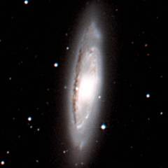

The Leo I group is a very famous group of galaxies because it contains a lot of bright galaxies. On the right is the M96 subgroup and on the left is the M66 subgroup which are connected to each other via NGC 3489 which lies between them.
Below - three bright galaxies in the M96 subgroup. M95 (left) and M96 (centre) are both classified as barred spiral galaxies. NGC 3377 (right) is a bright elliptical galaxy.
| M95 | M96 | NGC 3377 |
Below - three more galaxies associated with the M96 subgroup. M105 (left) and NGC 3384 (centre) are two more bright elliptical galaxies. NGC 3489 (right) is a lenticular galaxy (lenticular galaxies are much flatter than elliptical galaxies) which lies inbetween the M96 and M66 subgroups.
| M105 | NGC 3384 | NGC 3489 |
This is a list of the main galaxies in the Leo I group. This group contains twelve galaxies with a diameter above thirty thousand light years.
1 2 3 4 5 6 7 8 9
Name Equatorial Blue Type Size Size RV Other
Coordinates Mag (') kly km/s Names
RA Dec
NGC 3239 10 25.1 +17 10 11.7 Irr 4.5 45 1078
NGC 3299 10 36.4 +12 42 14.1 SBd 1.9 20 977
PGC 31877 10 42.0 +12 20 16.8 S0 0.6 5 1116
M95 10 44.0 +11 42 10.5 SBb 7.6 75 1117 NGC 3351
M96 10 46.8 +11 49 10.1 SBa 7.8 80 1237 NGC 3368
PGC 83339 10 46.9 +13 00 17.3 Irr 1.2 10 1171
NGC 3377A 10 47.4 +14 04 14.3 SBm 1.8 20 905 UGC 5889
PGC 83341 10 47.5 +13 53 17.5 Sc 0.5 5 909
NGC 3377 10 47.7 +13 59 11.1 E 4.4 45 1026
M105 10 47.8 +12 35 10.2 E 5.1 50 1217 NGC 3379
NGC 3384 10 48.3 +12 38 10.8 E 5.4 55 1066
PGC 32348 10 48.9 +14 07 16.1 E? 0.8 10 973
UGC 5923 10 49.1 +06 55 14.1 Sa 0.9 10 1061
NGC 3412 10 50.9 +13 25 11.4 S0 3.7 40 1191
NGC 3489 11 00.3 +13 54 11.1 S0 3.5 35 1031
NGC 3593 11 14.6 +12 49 11.8 S0 5.2 55 969
M65 11 18.9 +13 06 10.2 SBa 9.1 95 1146 NGC 3623
M66 11 20.2 +13 00 9.6 SBb 8.7 90 1066 NGC 3627
NGC 3628 11 20.3 +13 35 10.3 Sb 12.9 130 1184
IC 2787 11 23.3 +13 38 16.0 Sc 0.8 10 1081
|
Column 1: The usual name of the galaxy.
Column 2: The Right Ascension for epoch 2000.
Column 3: The Declination for epoch 2000.
Column 4: The blue apparent magnitude of the galaxy.
Column 5: The galaxy type: E=Elliptical, S0=Lenticular, Sa,Sb,Sc,Sd=Spiral,
SBa,SBb,SBc,SBd=Barred Spiral, Sm,SBm,Irr=Irregular.
Column 6: The angular diameter of the galaxy (arcminutes).
Column 7: The diameter of the galaxy (thousands of light years).
Column 8: The recessional velocity (km/s) of the galaxy relative to
the cosmic microwave background.
Column 9: Other names of the galaxy.
References:
Ferguson H, Sandage A, (1990), Population studies in groups and clusters of galaxies.
III - A catalog of galaxies in five nearby groups. Astron J, 100, 1.
Giuricin G, Marinoni C, Ceriani L, Pisani A, (2000), Nearby optical galaxies:
selection of the sample and identification of groups. Astrophys J, 543, 178.
Garcia A, (1993), General study of group membership. II. Determination of nearby
groups. Astron Astrophys Supp, 100, 47.
Fouqué P, Gourgoulhon E, Chamaraux P, Paturel G, (1992), Groups of Galaxies within
80 Mpc, Astron and Astrophys Supp, 93, 211.
The HyperLeda Database, (2003).
Below - three galaxies in the M66 subgroup. NGC 3593 (left) is a lenticular galaxy with some lanes of dust near the middle of it. M65 (centre) and M66 (right) are two bright barred spiral galaxies.
|  | ||
| NGC 3593 | M65 | M66 |
Shown below is NGC 3628. This is a superb example of an edge-on spiral galaxy. Like most spiral galaxies, the disk of this galaxy filled is with dark clouds of dust.
| Properties of the Leo I Group | |
|---|---|
| Equatorial Coordinates | RA=11h00m Dec=+13° |
| Galactic Coordinates | l=235° b=+60° |
| Supergalactic Coordinates | L=95° B=-25° |
| Distance to the centre of the group | 35 million light years |
| Number of large galaxies in the group | 12 |
| Alternative names for the group | M66/M96 Group |